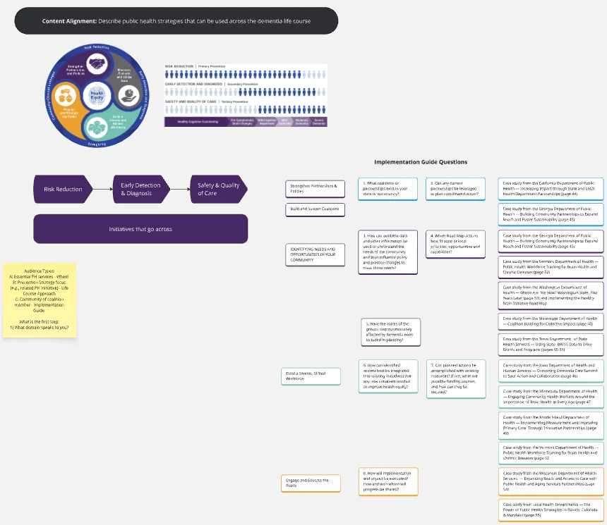

The Alzheimer’s Association wanted to raise awareness of dementia as a public health issue. They needed training that public health professionals could take, and that could also be used in college courses. The training had to support the Healthy Brain Initiative (HBI) Road Map.
Partnered with the HBI team to design and develop a three-module series grounded in the three levels of prevention. Each module moved from action mapping to storyboard to build, with close client review at every stage.
Led a detailed action mapping exercise for each module.
Created storyboards that aligned each objective with its content, interactions, and visuals.
Built modules in Articulate Rise with embedded Storyline interactions.
Used animated scenarios that follow public health professionals as they apply the content in their communities.
Added interactive elements, including an animated timeline, drag-and-drop activities, an explorable community scene, and a game-board view of caregiving roles.
Translated research into visual data stories and real state examples to make the content relevant for practitioners.
Introduced a custom-coded journal so learners can capture reflections and print or save them. Rise does not offer this natively. The journal was developed with support from a colleague in the Articulate E-Learning Heroes community.
Three modules, one series
Understanding the Public Health Impact of Dementia
Builds the case for dementia as a public health priority. Introduces the history of the HBI and the three levels of prevention.
Implementing Public Health Strategies for Dementia
Guides learners through the HBI Road Map. Helps them plan action for their own communities.
Public Health and Dementia Caregiving
Examines who dementia caregivers are and the many roles they take on. Explores the toll caregiving takes on their health. Shows how public health agencies can support caregivers through the 10 Essential Public Health Services.
Inside the series
From content alignment to storyboard
